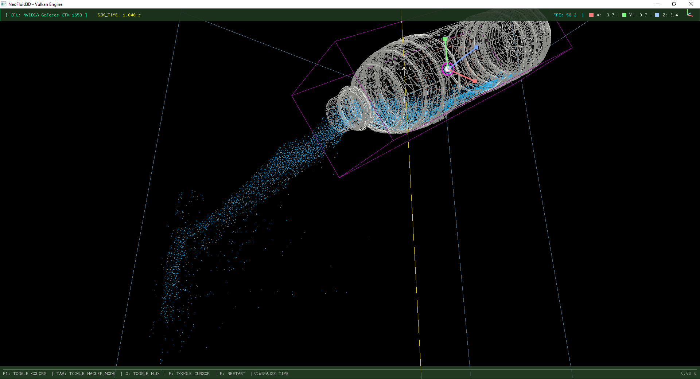
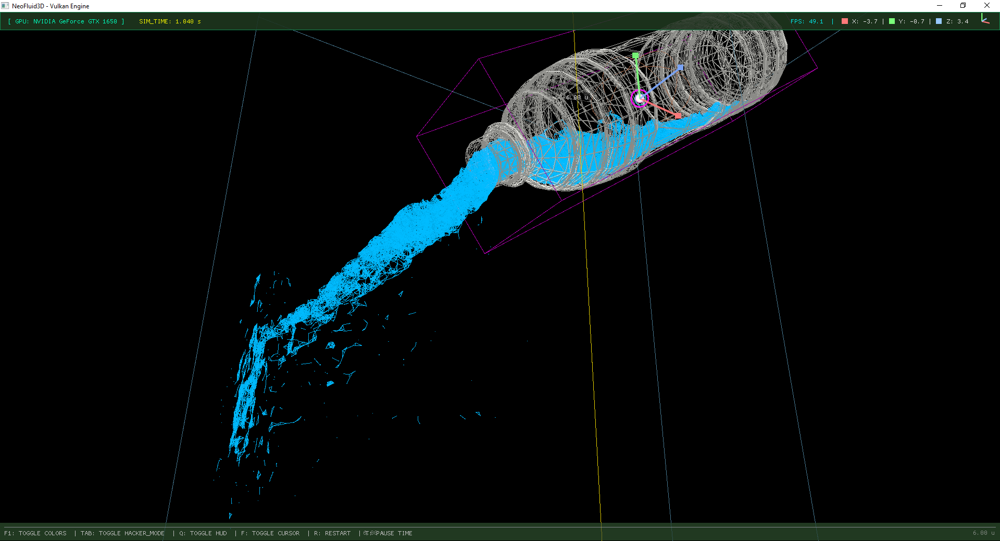
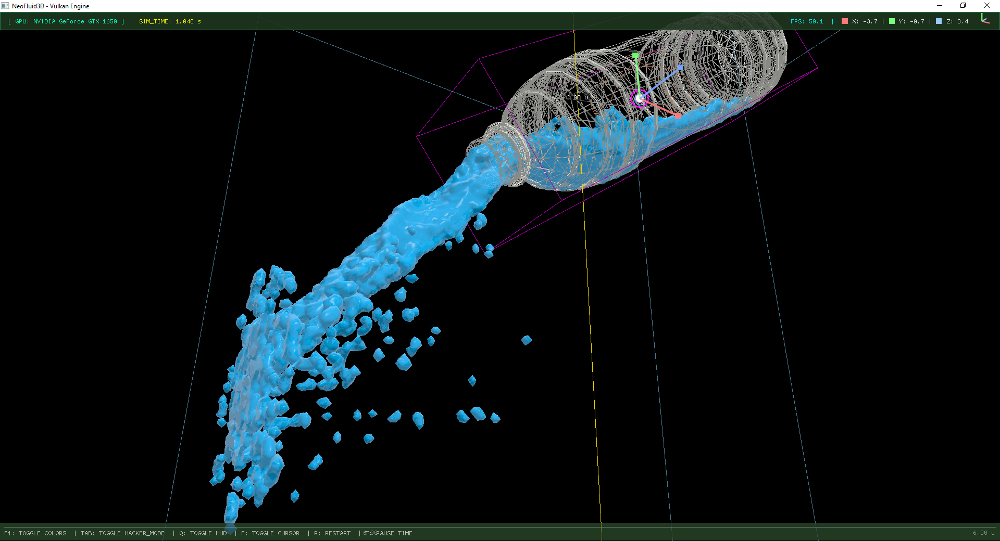
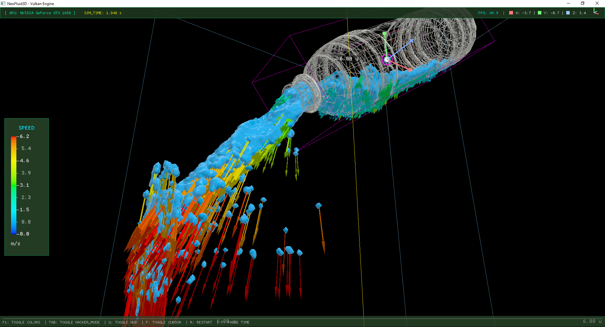
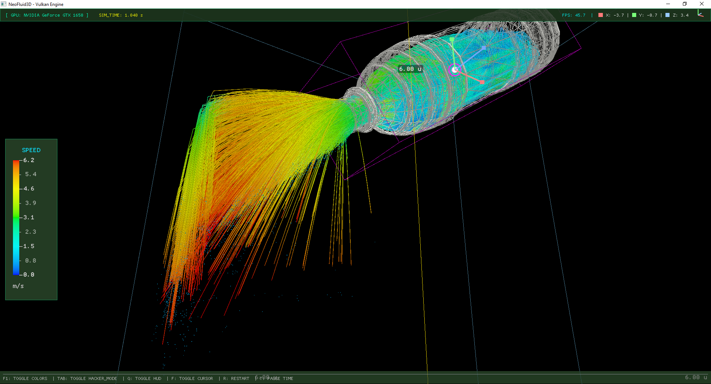
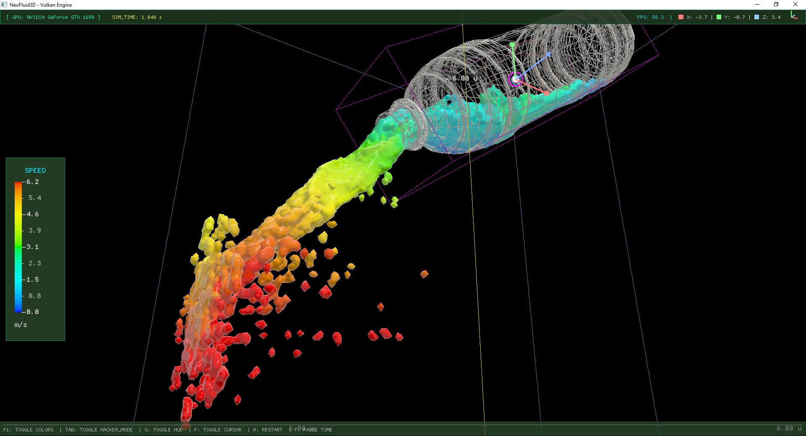

Reconstrucción Volumétrica
Malla Fluida & Refracción
Visualización de la reconstrucción continua de la superficie del líquido en tiempo real, con sombreado de cristal y cálculo de gradientes.
Motor de cálculo acelerado directamente en GPU concebido como tecnología fundacional de simulación de fluidos para gemelos digitales industriales, prototipado pre-CFD, simuladores inmersivos y pipelines 3D avanzados.
NeoFluid3D representa una tecnología fundacional de simulación de fluidos de última generación. Hemos consolidado una arquitectura matemática y gráfica de ultra-alto rendimiento ejecutada directamente en GPU, permitiendo simular dinámicas de fluidos complejas en tiempo real con máxima fidelidad visual y sin requerir infraestructura pesada.
Este núcleo constituye el cimiento para construir soluciones especializadas: desde módulos de validación hidrodinámica rápida para empresas de ingeniería hasta herramientas de visualización interactiva para gemelos digitales y producción digital.
Estamos evolucionando de la fase de investigación hacia un modelo de tecnología licenciable y desarrollos a medida para empresas que requieran procesamiento de fluidos en tiempo real con latencia mínima.
La dinámica de fluidos se procesa íntegramente en la GPU, liberando los recursos del sistema para la lógica de negocio y aplicaciones interactivas.
Generación de superficies volumétricas fluidas en tiempo real, permitiendo renderizado fotorrealista y análisis morfológico.
Detección de colisiones con modelos CAD e interactivos para evaluar el comportamiento del flujo contra sólidos arbitrarios.
Ajuste instantáneo de viscosidad, densidad, presiones y fuerzas externas para experimentación y calibración rápida.
Observa el comportamiento del núcleo en diferentes escenarios de dinámica de fluidos, interacción con obstáculos y reconstrucción visual.
Visualización de la reconstrucción continua de la superficie del líquido en tiempo real, con sombreado de cristal y cálculo de gradientes.
Simulación de miles de elementos interactuando entre sí y respondiendo a obstáculos sólidos con cálculo de presión y tensión superficial.
Mapeo analítico de la dirección y magnitud de las velocidades del flujo, facilitando la inspección de turbulencias y corrientes.
Análisis de arquitectura comparativa entre el procesamiento masivo paralelo en memoria de video (VRAM) frente al cuello de botella tradicional de CPU secuencial, optimizando la fluidez y respuesta en tiempo real.
Paradigmas de cálculo hidrodinámico
| Criterio Técnico | CFD Clásico (CPU) | Aproximación Gráfica | NeoFluid3D (GPU) |
|---|---|---|---|
| Paradigma de Cálculo | Serial / Hilos de CPU | Deformación de Vértices | SIMD Masivo en GPU |
| Residencia de Datos | RAM del Sistema (Bus PCIe) | Memoria Gráfica Básica | 100% VRAM (Cero Latencia de Bus) |
| Topología del Fluido | Malla Rígida (Remallado Lento) | Animación Superficial | Masa Discreta de Partículas |
| Capacidad de Respuesta | Cálculo Fuera de Línea (Horas) | Rápida sin Física Real | Tiempo Real Interactivo |
| Carga en el Host | Saturación de Núcleos CPU | Carga Moderada de CPU | CPU Libre para la Aplicación |
Flujo de cálculo unificado ejecutado por fotograma
Indexación espacial acelerada para ordenar las partículas en memoria contigua y optimizar la búsqueda de vecindad sin transferencias fuera de la GPU.
Cálculo de la densidad volumétrica local de cada partícula mediante interpolación espacial y resolución de presiones hidrodinámicas.
Computación simultánea de gradientes de presión, disipación por viscosidad cinemática, cohesión y aceleración de gravedad.
Integración numérica del paso de tiempo, actualizando posiciones y resolviendo límites de contacto contra obstáculos sólidos.
Estructura de software concebida con separación estricta entre el cálculo físico y la representación gráfica, proyectada para integrarse progresivamente en diversos entornos de ingeniería y visualización.
Pipeline de cómputo físico y desacoplamiento de capas
El motor permite alternar instantáneamente entre diferentes modos de análisis para examinar tanto la estética volumétrica como la coherencia física subyacente.

Sombreado esférico GPU con cálculo de densidad SPH en VRAM.

Topología de vecindad y radios de interacción del kernel.

Reconstrucción continua de isosuperficie líquida (Marching Cubes).

Matriz tridimensional de flechas con dirección y gradiente cinético.

Estelas dinámicas que trazan corrientes laminares y turbulencias.

Gradiente térmico científico proporcional a la velocidad |v| del fluido.
La base técnica actual está proyectada para evolucionar en módulos de alto valor agregado para diversas industrias que requieren simulación de fluidos ágil, precisa y visualmente convincente.
Integración en plataformas de monitoreo visual e interactivo de depósitos, plantas de tratamiento, sistemas de bombeo y tuberías. Permite a los operadores visualizar el comportamiento interno del líquido y simular escenarios de desborde o llenado en tiempo real sin cálculos lentos fuera de línea.
Los paquetes CFD tradicionales tardan horas o días en calcular un solo escenario. NeoFluid3D ofrece un entorno de prueba rápida para validar conceptos preliminares, observar turbulencias y probar geometrías antes de enviar a cómputo de alta precisión.
Entornos de capacitación técnica inmersivos (VR/AR) donde operarios, bomberos o personal médico deben interactuar con líquidos con latencia cero y respuesta física verosímil ante manipulaciones con mandos o sensores.
Empaquetado como plugin o SDK nativo para integrarse en pipelines de producción virtual, Unreal Engine, Unity o motores propietarios, permitiendo a los directores y creadores previsualizar e interactuar con fluidos dinámicos en el set en tiempo real.
Soluciones visuales de alto impacto para centros de ciencia, museos y pabellones corporativos donde el público interactúa con el fluido mediante sensores de movimiento (Kinect, cámaras de profundidad o pantallas táctiles).
Adaptamos el núcleo a los requisitos particulares de hardware, restricciones de memoria y modelos matemáticos específicos de su empresa, garantizando propiedad intelectual y soporte técnico especializado.
Avanzamos con una estrategia clara: consolidar la robustez del motor fundacional para luego abrir canales de integración directa y licenciamiento para el sector empresarial.
Motor de simulación gráfica de alta eficiencia, cómputo paralelo masivo en GPU y respuesta física instantánea a 60 FPS.
CompletadoReconstrucción continua de superficies líquidas y mallas fotorrealistas en tiempo real con refracción y sombreado avanzado.
CompletadoEntorno interactivo con ajuste dinámico de parámetros de fluido y soporte para interacción con sólidos y geometrías complejas.
● En ProgresoSDK modular y suite de integración corporativa para incrustar el motor en aplicaciones, gemelos digitales y visores 3D.
○ PlaneadoLicenciamiento empresarial, soporte técnico preferente y desarrollos a medida para industrias de ingeniería, media y software.
○ PlaneadoLa identidad visual de NeoFluid3D se deriva directamente de superficies paramétricas tridimensionales $\mathbb{R}^3$, discretizadas en mallas computacionales y proyectadas canónicamente a $\mathbb{R}^2$.
Arquitectura tipográfica biconceptual de alta precisión, notación dimensional inspirada en la computación gráfica clásica y formulación cromática oficial de alto contraste tecnológico.
Mayúsculas sólidas en tipografía geométrica de alto impacto. Adopta el Celeste de Marca (#00F0FF) en alusión a la tensión superficial del agua, la fluidez y el dinamismo hidrodinámico continuo.
Palabra unificada en tipografía monoespaciada técnica. Toda la palabra compuesta se renderiza uniformemente en Verde de Marca (#39FF14), simbolizando la terminal de cálculo, la aceleración GPU y la precisión del solver:
Ecuaciones hidrodinámicas discretizadas y resueltas en paralelo masivo en memoria de video (VRAM).
El superíndice ³ y la letra D en línea base crean el efecto flat-depth unificado en verde.
Tanto la fila superior NEO como la fila inferior Fluid³D miden exactamente la mitad ($2u = H/2$) de la altura total del isotipo ($4u = H$), conformando un bloque armónico perfecto.
Fila 1 NEO se renderiza 100% en Celeste de Marca (#00F0FF) y Fila 2 Fluid³D se renderiza 100% parejo en Verde de Marca (#39FF14), sin caracteres en blanco.
El superíndice cúbico ³ y la letra D anclada a la línea base comparten el mismo color verde de cómputo, proyectando volumen ortográfico tridimensional.
Separación de $1u = H/4$ ($25\%$ de la altura) entre la tangente del isotipo y el texto, con un margen perimetral de reserva libre de al menos $1u$ en los 4 costados.
Regla modular de las 4 partes ($u = H/4$): alineación óptica, separación modular ($1u$) y proporción dimensional exacta del imagotipo apilado oficial.
Accede a la vista dedicada e interactiva del manual oficial de identidad visual y formulación geométrica de NeoFluid3D (19 páginas técnicas de cotas, isotipos, tipografía y reglas de no deformación para el Hackathon Nicaragua 2026).
Estamos abiertos a conversaciones con empresas de ingeniería, estudios de desarrollo y socios estratégicos que deseen explorar el potencial de NeoFluid3D para sus productos.
Presentaciones en vivo adaptadas a sus casos de uso específicos.
Opciones flexibles para evaluación tecnológica y prototipado inicial.
Adaptación del motor a sus estándares de software y hardware.